Pengenalan Laravel API
Disini kita akan membuat sebuah logika aplikasi bernama Mangs Ipul yang dimana terdapat fitur manejemen produk dan transaksi
Ini adalah struktur database yang akan kita buat
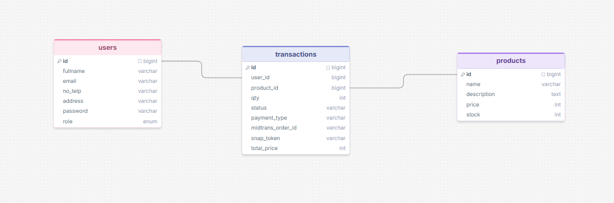
Ini adalah alur aplikasi yang akan kita buat
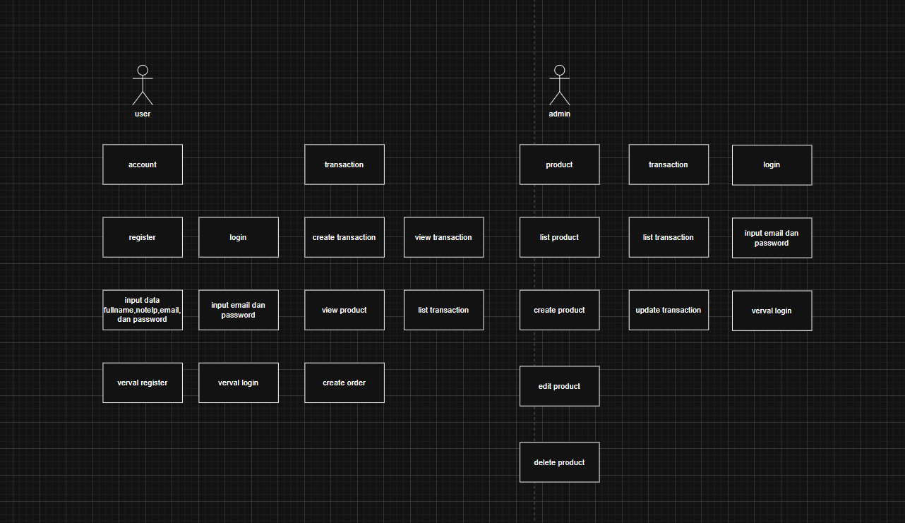
Ini adalah link prototype design webnya
Laravel adalah framework yang paling sesuai dengan kebutuhan kita saat ini. Laravel merupakan framework berbasis php yang dimana menyediakan kerangka kerja yang user friendly
Tujuan Modul
Modul ini akan membimbing Anda dalam membuat:
- RESTful API dengan Laravel
- Autentikasi API menggunakan Laravel Sanctum
- CRUD lengkap untuk resource Produk
- Integrasi Payment Gateway (Midtrans)
- Testing API dengan Postman
Sebelum memulai pengembangan aplikasi, Anda perlu menyiapkan beberapa tools penting agar proses coding berjalan lancar dan efisien.
Alat Persiapan
Berikut adalah tools yang perlu Anda install:
-
Laragon
Laragon adalah aplikasi lokal server yang digunakan untuk menjalankan PHP, MySQL, dan tools backend lainnya dengan mudah.
🔗 Download: https://laragon.org/download/
⚙️ Cara Install:
1. Download installer dari website resmi
2. Jalankan file installer
3. Klik "Next" sampai selesai
4. Buka Laragon dan klik "Start All" -
Visual Studio Code (VS Code)
VS Code adalah code editor ringan namun powerful yang digunakan untuk menulis dan mengelola kode program.
🔗 Download: https://code.visualstudio.com/
⚙️ Cara Install:
1. Download installer sesuai OS
2. Jalankan installer
3. Centang "Add to PATH" (opsional tapi disarankan)
4. Klik "Install" dan tunggu selesai
5. Buka VS Code dan install extension seperti:
- PHP Intelephense
- Laravel Blade Snippets
- Prettier
Setup Projek Laravel
Langkah cepat membuat project Laravel menggunakan Laragon dan konfigurasi awal.
Panduan Setup via Laragon
Buka Laragon
Pastikan Laragon sudah running (tombol Start All berwarna hijau)
Klik Kanan pada icon Laragon di system tray
Pilih menu Quick App → Laravel
Tunggu Proses Installasi
Laragon akan otomatis mendownload dan menginstall Laravel beserta dependensinya
# Masuk ke VsCode di root projek code . # Install API dan Sanctum php artisan install:api # Jalankan development server php artisan serve
Jika sudah coba akses `localhost:8000` di browser dan pastikan tampilannya seperti gambar ini
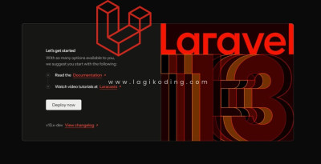
setelah muncul tampilan itu, kembali ke Vscode dan cari file .env lalu konfigurasikan database seperti kode dibawah
Konfigurasi Database (.env)
DB_CONNECTION=mysql DB_HOST=127.0.0.1 DB_PORT=3306 DB_DATABASE=belajar_api DB_USERNAME=root DB_PASSWORD=
php artisan migrate
Autentikasi API dengan Sanctum
kita akan membangun sebuah sistem autentikasi berbasis API menggunakan Laravel Sanctum. Sistem autentikasi ini berfungsi untuk memastikan bahwa hanya pengguna yang terdaftar dan memiliki kredensial yang valid saja yang dapat mengakses fitur tertentu dalam aplikasi.
Dalam prosesnya, kita akan memulai dari pembuatan endpoint register dan login. Ketika pengguna melakukan registrasi, data seperti username dan password akan disimpan ke dalam database. Kemudian saat login, sistem akan melakukan verifikasi data tersebut. Jika berhasil, server akan mengembalikan token autentikasi yang nantinya digunakan untuk mengakses endpoint yang dilindungi.
1. Register
di tahap ini kita akan membuat sistem registrasi atau pendaftaran yang dimana nanti user dapat membuat akun baru
Pertama, kita akan melakukan penyesuaian pada struktur tabel users di database.
Silakan buka file migration yang berada di folder database/migrations, biasanya dengan nama seperti xxxx_xx_xx_create_users_table.php
Kemudian, cari bagian Schema::create('users') dan ganti isinya menjadi seperti berikut:
Schema::create('users', function (Blueprint $table) {
$table->id();
$table->string('fullname');
$table->string('email')->unique();
$table->string('no_telp');
$table->string("address");
$table->string('password');
$table->enum('role', ['admin', 'member'])->default('member');
$table->rememberToken();
$table->timestamps();
});
Setelah itu, jangan lupa jalankan perintah php artisan migrate. untuk menerapkan perubahan ke database.
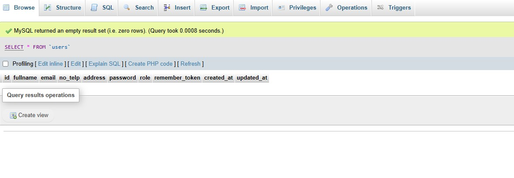
selanjutnya, kita akan melakukan konfigurasi pada model User agar dapat digunakan untuk autentikasi menggunakan Sanctum.
Silakan buka file app/Models/User.php, kemudian tambahkan properti protected $guarded = []; dan gunakan trait HasApiTokens beserta import class-nya seperti berikut:
<?php
namespace App\Models;
use Illuminate\Database\Eloquent\Factories\HasFactory;
use Illuminate\Foundation\Auth\User as Authenticatable;
use Laravel\Sanctum\HasApiTokens;
class User extends Authenticatable
{
use HasFactory, HasApiTokens;
protected $guarded = [];
}
setelah itu kita akan membuat controller yang berfungsi sebagai pengatur logic aplikasi, di controller terdapat validasi input untuk mencegah kesalahan pengguna dalam menggunakan aplikasi seperti password minimal harus 6 karakter, username tidak boleh sama dengan pengguna lain, inputan email harus berformat email dan lain sebagainya
php artisan make:controller AuthController
kita akan dibuatkan AuthController.php, kemudian salin kode dibawah kedalam file
<?php
namespace App\Http\Controllers;
use App\Models\User;
use Illuminate\Http\Request;
use Illuminate\Support\Facades\Hash;
use Illuminate\Validation\ValidationException;
class AuthController extends Controller
{
public function register(Request $request)
{
$request->validate([
'fullname' => 'required|string|max:255',
'email' => 'required|string|email|max:255|unique:users,email',
'no_telp' => 'required|string|max:20',
'address' => 'required|string|max:255',
'password' => 'required|string|min:6',
]);
$user = \App\Models\User::create([
'fullname' => $request->fullname,
'email' => $request->email,
'no_telp' => $request->no_telp,
'address' => $request->address,
'password' => $request->password,
]);
return response()->json(['message' => 'User registered successfully, you can now login', 'user' => $user], 201);
}
}
Script ini berfungsi untuk menerima data registrasi pengguna, memvalidasi input seperti nama, email, dan password, lalu menyimpan data tersebut ke database sebagai user baru dan mengembalikan respon sukses dalam bentuk JSON.
setelah itu tambahkan script dibawah ini untuk mendaftarkan logic tadi ke endpoint
Route::post('/login', [AuthController::class, 'register']);
Langkah-langkah membuat workspace dan request di Postman:
- 1. Buka aplikasi Postman dan buat workspace baru
- 2. Buat collection baru dan namai "belajar api"
- 3. klik titik tiga pada collection dan pilih opsi add request
- 4. klik titik tiga pada request dan rename menjadi "Register"
- 5. perhatikan disisi kanan ada teks GET berwarna hijau(disebelah inputan url)
- 6. ganti get menjadi POST(yang berwarna kuning)
- 7. ketikan di inputan url "localhost:8000/api/register"
- 8. pergi ke menu headers. di bagian key pilih Accept lalu value pilih application/json
- 9. selanjutnya pergi ke menu body lalu ke form data
- 10. inputkan data yang dibutuhkan menyesuaikan tabel users dan script di AuthController.php tadi
- 10. pencet tombol send berwarna biru disamping kanan inputan url
gambar di bawah menandakan register berhasil. anda bisa cek tabel users di "localhost/phpmyadmin" dan pastikan sudah ada data yang anda inputkan atau belum
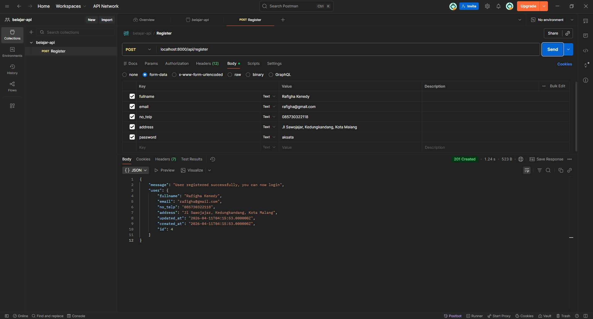
2. Login
Pada tahap ini, kita akan membuat sistem login dimana user dapat masuk menggunakan email dan password yang sudah didaftarkan sebelumnya.
public function login(Request $request)
{
$request->validate([
'email' => 'required|string|email',
'password' => 'required|string',
]);
$user = \App\Models\User::where('email', $request->email)->first();
if (!$user || !\Illuminate\Support\Facades\Hash::check($request->password, $user->password)) {
return response()->json(['message' => 'Invalid credentials'], 401);
}
$token = $user->createToken('auth_token')->plainTextToken;
return response()->json(['message' => 'Login successful', 'token' => $token]);
}
Script ini berfungsi untuk memverifikasi email dan password user, lalu memberikan token autentikasi jika login berhasil.
Selanjutnya, daftarkan endpoint login pada file routes/api.php seperti berikut:
Route::post('/login', [AuthController::class, 'login']);
Langkah-langkah membuat request Login di Postman:
- 1. Klik titik tiga di collection lalu pilih Add Request
- 2. Rename request menjadi Login
- 3. Ubah method menjadi POST
- 4. Masukkan URL: localhost:8000/api/login
- 5. Masuk ke tab Headers, isi:
Key: Accept
Value: application/json - 6. Masuk ke tab Body → pilih form-data
- Tambahkan field berikut:
- email
- password - 7. Isi email dan password sesuai dengan data yang sudah diregister sebelumnya
- 8. Klik tombol Send
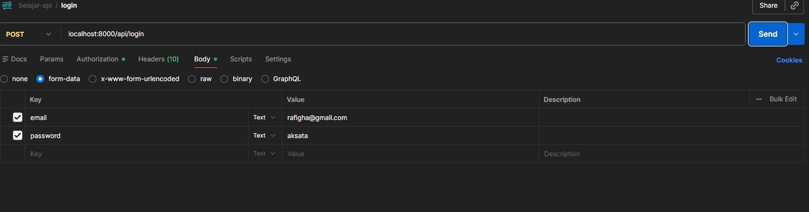
Jika berhasil, maka akan muncul response berupa token yang nantinya digunakan untuk mengakses endpoint yang membutuhkan autentikasi.
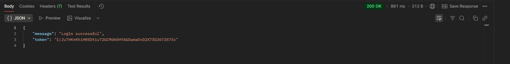
3. Get Auth User
Pada tahap ini, kita akan mengambil data user yang sedang login berdasarkan token yang telah didapatkan saat login.
Endpoint ini dilindungi oleh middleware auth:sanctum, sehingga hanya user yang memiliki token yang valid yang dapat mengaksesnya.
Cara menggunakan token di Postman:
- 1. Lakukan login terlebih dahulu dan copy token yang didapatkan
- 2. buat request baru dengan nama Get Auth Me
- 3. Masukkan URL: localhost:8000/api/user
- 4. Masuk ke tab Authorization dan cari Bearer Token di dropdown
- 5. tempelkan token di inputan seperti di gambar
- 6. Klik tombol Send
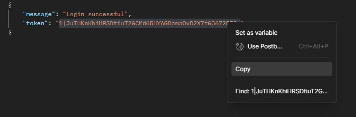
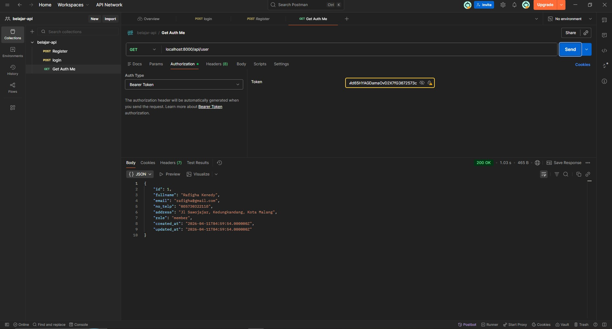
Jika token valid, maka sistem akan mengembalikan data user yang sedang login.
Jika token tidak valid atau tidak dikirim, maka akan muncul error Unauthorized.
4. Logout
Pada tahap ini, kita akan membuat fitur logout yang berfungsi untuk menghapus token user sehingga tidak bisa lagi mengakses endpoint yang dilindungi.
public function logout(Request $request)
{
$user = Auth::user();
$user->tokens()->delete();
return response()->json(['message' => 'Logout successful']);
}
Script ini berfungsi untuk mengambil user yang sedang login melalui token, kemudian menghapus semua token milik user tersebut sehingga akses ke sistem akan terputus.
Selanjutnya, daftarkan endpoint logout pada file routes/api.php dan gunakan middleware auth:sanctum agar hanya user yang login yang bisa mengaksesnya.
Route::middleware('auth:sanctum')->post('/logout', [AuthController::class, 'logout']);
- 1. Sertakan token pada bagian Authorization dengan format Bearer Token seperti di request Get Auth Me tadi
- 2. masukan di input "localhost:8000/api/logout"
- 3. Pencet tombol Send
jika berhasil maka terdapat message Logout successful
perlu diperhatikan!! token yang sudah di logout tidak bisa dipakai ulang, jadi kamu harus login ulang untuk dapat token baru
CRUD Produk
Pada section ini, kita akan membangun fitur CRUD (Create, Read, Update, Delete) untuk mengelola data produk. Fitur ini akan menjadi fondasi untuk sistem e-commerce yang akan kita bangun selanjutnya.
Kita akan membagi akses endpoint menjadi dua kategori:
- Public Endpoint: Dapat diakses tanpa autentikasi (READ only)
- Protected Endpoint: Hanya dapat diakses oleh admin (CREATE, UPDATE, DELETE)
1 Create Model & Migration
Pertama, kita akan membuat Model Product beserta migration file-nya. Jalankan perintah berikut di terminal:
php artisan make:model Product -m
Flag -m akan otomatis membuat file migration untuk tabel products.
Selanjutnya, buka file migration yang berada di folder database/migrations/xxxx_xx_xx_create_products_table.php dan ubah schema-nya menjadi seperti berikut:
Schema::create('products', function (Blueprint $table) {
$table->id();
$table->string('name');
$table->text('description');
$table->integer('price');
$table->integer('stock');
$table->timestamps();
});
Setelah selesai, jalankan migration untuk membuat tabel di database:
php artisan migrate
Cek di phpMyAdmin, tabel products seharusnya sudah muncul dengan struktur yang kita definisikan.
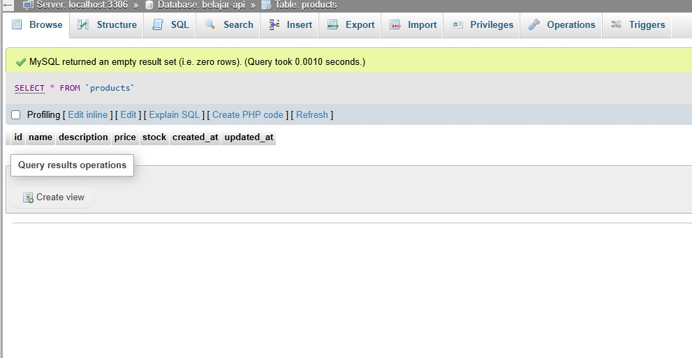
2 Konfigurasi Model Product
Buka file app/Models/Product.php dan tambahkan properti $fillable untuk menentukan field mana saja yang boleh diisi secara massal:
<?php
namespace App\Models;
use Illuminate\Database\Eloquent\Factories\HasFactory;
use Illuminate\Database\Eloquent\Model;
class Product extends Model
{
use HasFactory;
protected $fillable = [
'name',
'description',
'price',
'stock',
];
}
$fillable berfungsi untuk melindungi aplikasi dari Mass Assignment Vulnerability. Hanya field yang terdaftar di sini yang bisa diisi menggunakan method create() atau update().
3 Create Admin Middleware
Kita perlu membuat middleware untuk membatasi akses operasi Create, Update, dan Delete hanya untuk user dengan role admin. Jalankan perintah berikut:
php artisan make:middleware AdminMiddleware
Buka file app/Http/Middleware/AdminMiddleware.php dan isi dengan kode berikut:
<?php
namespace App\Http\Middleware;
use Closure;
use Illuminate\Http\Request;
use Symfony\Component\HttpFoundation\Response;
use Illuminate\Support\Facades\Auth;
class AdminMiddleware
{
public function handle(Request $request, Closure $next): Response
{
$user = Auth::user();
if ($user->role !== 'admin') {
return response()->json([
'message' => 'Admin only'
], 403);
}
return $next($request);
}
}
Selanjutnya, daftarkan middleware ini di file bootstrap/app.php:
->withMiddleware(function (Middleware $middleware) {
$middleware->alias([
'admin' => \App\Http\Middleware\AdminMiddleware::class,
]);
})
Catatan Penting
Pastikan Anda sudah membuat user dengan role admin di database. Anda bisa mengubah role user melalui phpMyAdmin dengan mengedit kolom role menjadi "admin".
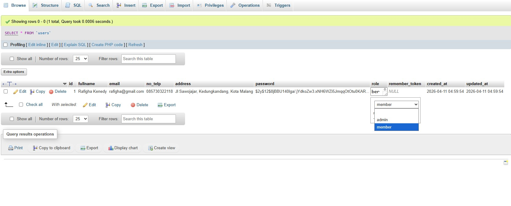
4 Create Product Controller
Buat controller untuk menangani semua operasi CRUD produk:
php artisan make:controller ProductController --resource
Flag --resource akan membuat controller dengan method standar RESTful (index, store, show, update, destroy).
Buka file app/Http/Controllers/ProductController.php dan ganti seluruh isinya dengan kode berikut:
<?php
namespace App\Http\Controllers;
use App\Models\Product;
use Illuminate\Http\Request;
class ProductController extends Controller
{
/**
* Get Semua Produk (PUBLIC)
* Endpoint ini dapat diakses tanpa autentikasi
*/
public function index()
{
$products = Product::all();
return response()->json($products);
}
/**
* Get Detail Produk (PUBLIC)
* Endpoint ini dapat diakses tanpa autentikasi
*/
public function show(Product $product)
{
return response()->json($product);
}
/**
* Create Produk Baru (ADMIN ONLY)
* Endpoint ini memerlukan autentikasi dan role admin
*/
public function store(Request $request)
{
$request->validate([
'name' => 'required|string|max:255',
'description' => 'required|string',
'price' => 'required|integer|min:0',
'stock' => 'required|integer|min:0',
]);
$product = Product::create([
'name' => $request->name,
'description' => $request->description,
'price' => $request->price,
'stock' => $request->stock,
]);
return response()->json([
'message' => 'Product created successfully',
'product' => $product
], 201);
}
/**
* Update Produk (ADMIN ONLY)
* Endpoint ini memerlukan autentikasi dan role admin
*/
public function update(Request $request, Product $product)
{
$request->validate([
'name' => 'required|string|max:255',
'description' => 'required|string',
'price' => 'required|integer|min:0',
'stock' => 'required|integer|min:0',
]);
$product->update([
'name' => $request->name,
'description' => $request->description,
'price' => $request->price,
'stock' => $request->stock,
]);
return response()->json([
'message' => 'Product updated successfully',
'product' => $product
]);
}
/**
* Delete Produk (ADMIN ONLY)
* Endpoint ini memerlukan autentikasi dan role admin
*/
public function destroy(Product $product)
{
$product->delete();
return response()->json([
'message' => 'Product deleted successfully'
]);
}
}
📋 Penjelasan Method Controller
| Method | Fungsi | Akses |
|---|---|---|
| index() | Mengambil semua data produk | PUBLIC |
| show() | Mengambil detail satu produk | PUBLIC |
| store() | Membuat produk baru | ADMIN ONLY |
| update() | Mengupdate data produk | ADMIN ONLY |
| destroy() | Menghapus produk | ADMIN ONLY |
5 Register API Routes
Buka file routes/api.php dan tambahkan routing untuk produk:
use App\Http\Controllers\ProductController;
use App\Http\Middleware\AdminMiddleware;
// PUBLIC ROUTES (Tanpa Autentikasi)
Route::get('/products', [ProductController::class, 'index']);
Route::get('/products/{product}', [ProductController::class, 'show']);
// PROTECTED ROUTES (Perlu Login)
Route::middleware('auth:sanctum')->group(function () {
Route::middleware([AdminMiddleware::class])->group(function () {
Route::post('/products', [ProductController::class, 'store']);
Route::put('/products/{product}', [ProductController::class, 'update']);
Route::delete('/products/{product}', [ProductController::class, 'destroy']);
});
});
Struktur Routing
Perhatikan bahwa route dibagi menjadi 3 level akses:
- • Public: Tanpa middleware (READ produk, Login, Register)
- • Auth Only: Dengan middleware
auth:sanctum(Get Auth me, Logout) - • Admin Only: Dengan middleware
auth:sanctum + AdminMiddleware(Create, Update, Delete)
6 Testing API di Postman
Setelah semua kode selesai, saatnya melakukan testing menggunakan Postman.
POST /api/products ADMIN ONLY
Membuat produk baru (harus login sebagai admin)
Langkah-langkah:
- 1. Login terlebih dahulu sebagai user admin
- 2. Copy token yang didapatkan
- 3. Buat request baru dengan method POST namai "create product"
- 4. Masukkan URL: localhost:8000/api/products
- 5. Klik Headers lalu pilih type Accept dan value application/json
- 6. Masuk ke tab Authorization → pilih Bearer Token → paste token
- 7. Masuk ke tab Body → pilih form-data
- 8. Tambahkan field:
- name
- description
- price
- stock - 8. Klik tombol Send
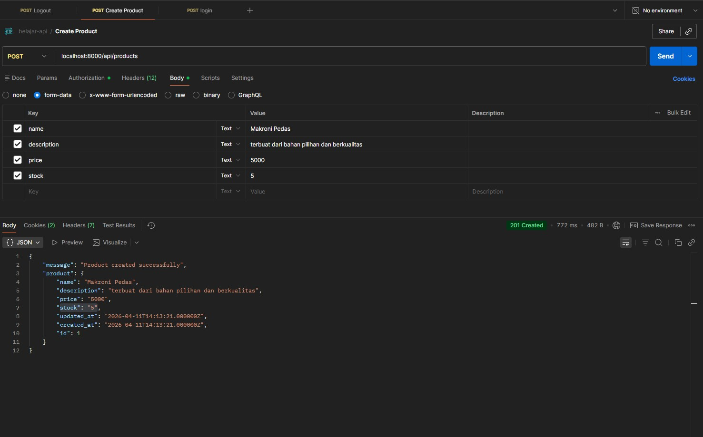
GET /api/products PUBLIC
Mengambil semua data produk (tidak perlu token)
Langkah-langkah:
- 1. Buat request baru, namai Get Product
- 2. Pilih method GET
- 3. Masukkan URL: localhost:8000/api/products
- 4. Klik tombol Send
Response yang diharapkan:
[
{
"id": 1,
"name": "Makroni Pedas",
"description": "terbuat dari bahan pilihan dan berkualitas",
"price": 5000,
"stock": 5,
"created_at": "2026-04-11T14:13:21.000000Z",
"updated_at": "2026-04-11T14:13:21.000000Z"
}
]
GET /api/products/{id} PUBLIC
Mengambil detail satu produk berdasarkan ID
- 1. Buat request baru namai Get Detail Product pilih method GET
- 2. Masukkan URL: localhost:8000/api/products/1
- 3. Klik tombol Send
Response yang diharapkan:
{
"id": 1,
"name": "Makroni Pedas",
"description": "terbuat dari bahan pilihan dan berkualitas",
"price": 5000,
"stock": 5,
"created_at": "2026-04-11T14:13:21.000000Z",
"updated_at": "2026-04-11T14:13:21.000000Z"
}
PUT /api/products/{id} ADMIN ONLY
Mengupdate data produk berdasarkan ID
- 1. buat request baru namanya Update Product dengan method PUT
- 2. letakan token di Authorization -> Bearer Token
- 3. Masukkan URL: localhost:8000/api/products/1
- 4. Masuk ke tab Headers → pilih Accept dan value Aplication/Json
- 5. Masuk ke tab Body → pilih form-data
- 6. Isi field yang ingin diupdate (name, description, price, stock)
- 7. Klik tombol Send
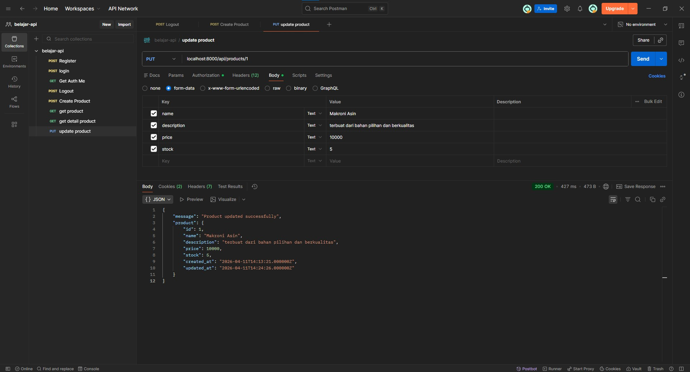
DELETE /api/products/{id} ADMIN ONLY
Menghapus produk berdasarkan ID
- 1. buat request baru namai Delete Product lalu Pilih method DELETE
- 2. Pastikan token admin sudah disertakan di Authorization
- 3. Masukkan URL: localhost:8000/api/products/1
- 4. Klik tombol Send
Response sukses:
{
"message": "Product deleted successfully"
}
7 Error Handling Examples
Berikut adalah beberapa contoh error response yang mungkin muncul:
❌ 401 Unauthorized
Terjadi ketika mengakses endpoint protected tanpa token
{
"message": "Unauthenticated."
}
🚫 403 Forbidden
Terjadi ketika user biasa mencoba akses endpoint admin
{
"message": "Admin only"
}
⚠️ 422 Validation Error
Terjadi ketika data yang dikirim tidak valid
{
"message": "The name field is required.",
"errors": {
"name": ["The name field is required."]
}
}
🔍 404 Not Found
Terjadi ketika produk dengan ID tertentu tidak ditemukan
{
"message": "No query results for model [App\\Models\\Product] 99"
}
📌 Ringkasan Endpoint Produk
| Method | Endpoint | Deskripsi | Auth | Role |
|---|---|---|---|---|
| GET | /api/products | Mengambil semua produk | ❌ | Public |
| GET | /api/products/{id} | Mengambil detail produk | ❌ | Public |
| POST | /api/products | Membuat produk baru | ✅ | Admin |
| PUT | /api/products/{id} | Mengupdate produk | ✅ | Admin |
| DELETE | /api/products/{id} | Menghapus produk | ✅ | Admin |
Transaksi & Payment Gateway
Implementasi transaksi dengan integrasi Midtrans Payment Gateway.
Pada section ini, kita akan mengintegrasikan Midtrans Payment Gateway ke dalam aplikasi Laravel kita. Midtrans adalah payment gateway terkemuka di Indonesia yang mendukung berbagai metode pembayaran seperti transfer bank, kartu kredit, QRIS, dan e-wallet.
Apa itu Payment Gateway?
Payment Gateway adalah layanan yang memproses pembayaran online antara pembeli dan penjual. Midtrans bertindak sebagai perantara yang aman untuk memproses transaksi tanpa perlu menyimpan data sensitif kartu kredit di server kita.
Fitur yang akan kita bangun:
- Membuat transaksi baru (Checkout)
- Mendapatkan Snap Token untuk pembayaran
- Webhook untuk notifikasi status pembayaran
- Melihat riwayat transaksi user
- Admin dapat mengelola semua transaksi
1 Daftar Akun Midtrans
Sebelum memulai integrasi, Anda perlu memiliki akun Midtrans terlebih dahulu.
Langkah-langkah Pendaftaran:
- 1. Kunjungi website Midtrans: https://midtrans.com
- 2. Klik tombol "Daftar" atau "Sign Up" di pojok kanan atas
- 3. Isi formulir pendaftaran dengan email dan data diri Anda
- 4. Verifikasi email yang dikirimkan oleh Midtrans
- 5. pastikan akun anda telah diaktivasi oleh admin midtrans(mungkin butuh waktu sekitar 3 hari)
- 6. Setelah login, Anda akan diarahkan ke Dashboard Midtrans
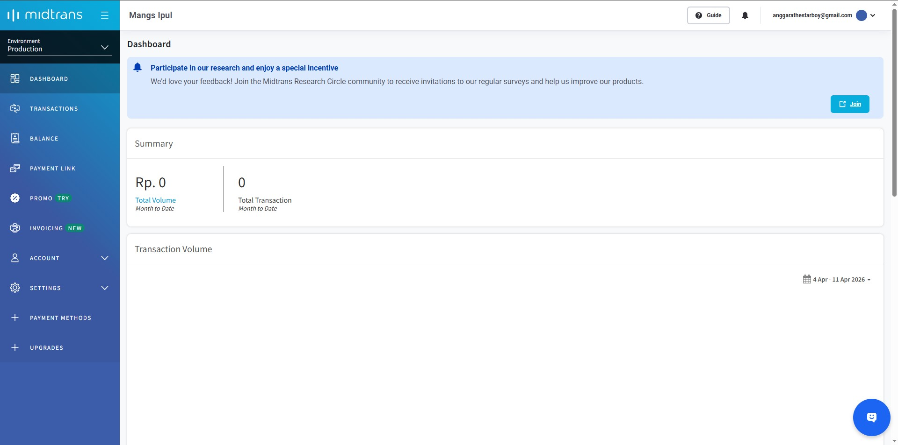
Mendapatkan Server Key & Client Key (Sandbox Mode)
- 1. di sidebar cari menu "Environment" klik lalu pilih sandbox
- 2. Pilih menu Settings → Access Keys
- 3. Copy Server Key dan Client Key
- 4. Simpan kedua key tersebut, akan kita gunakan nanti
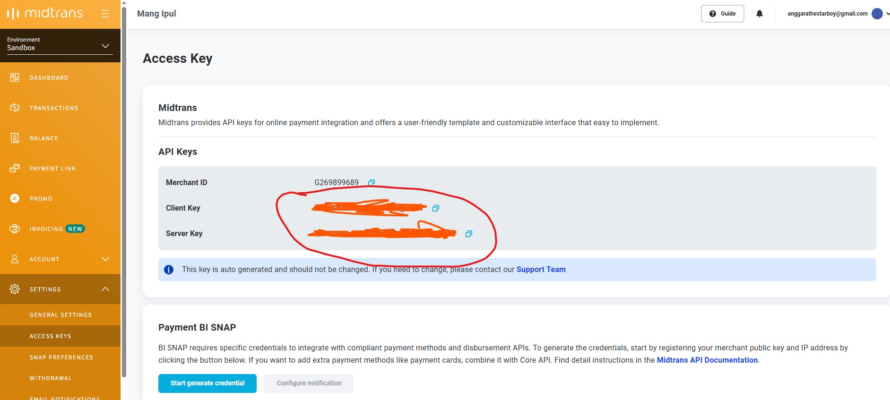
Penting!
Server Key bersifat RAHASIA dan hanya digunakan di backend. Client Key digunakan di frontend. Jangan pernah commit Server Key ke repository publik!
2 Install Midtrans Package
Install package Midtrans PHP melalui Composer:
composer require midtrans/midtrans-php
Package ini akan memudahkan kita dalam berinteraksi dengan Midtrans API.
3 Konfigurasi Environment (.env)
Tambahkan konfigurasi Midtrans di file .env:
MIDTRANS_SERVER_KEY=SB-Mid-server-xxxxxxxxxxxxxxxxxxxx MIDTRANS_CLIENT_KEY=SB-Mid-client-xxxxxxxxxxxxxxxxxxxx MIDTRANS_IS_PRODUCTION=false
Penjelasan
- •
MIDTRANS_SERVER_KEY: Digunakan untuk request dari backend ke Midtrans - •
MIDTRANS_CLIENT_KEY: Digunakan untuk inisialisasi Snap di frontend - •
MIDTRANS_IS_PRODUCTION:falseuntuk mode sandbox/testing,trueuntuk production
4 Buat Config Midtrans
Buat file konfigurasi Midtrans di config/midtrans.php:
<?php
return [
'serverKey' => env('MIDTRANS_SERVER_KEY'),
'clientKey' => env('MIDTRANS_CLIENT_KEY'),
'isProduction' => env('MIDTRANS_IS_PRODUCTION', false),
];
File ini akan memudahkan kita mengakses konfigurasi Midtrans menggunakan config('midtrans.serverKey').
5 Buat Tabel Transactions
Buat migration untuk tabel transactions:
php artisan make:migration create_transactions_table
Buka file migration yang baru dibuat dan isi dengan schema berikut:
Schema::create('transactions', function (Blueprint $table) {
$table->id();
$table->foreignId('user_id')->constrained()->onDelete('cascade');
$table->foreignId('product_id')->constrained()->onDelete('cascade');
$table->integer('qty');
$table->string('status');
$table->string('payment_type')->nullable();
$table->string('midtrans_order_id')->nullable();
$table->string('snap_token')->nullable();
$table->integer('total_price');
$table->timestamps();
});
📋 Penjelasan Kolom Tabel
| Kolom | Tipe | Keterangan |
|---|---|---|
| user_id | foreignId | Relasi ke tabel users (siapa yang beli) |
| product_id | foreignId | Relasi ke tabel products (produk yang dibeli) |
| qty | integer | Jumlah produk yang dibeli |
| status | string | Status transaksi: pending, success, failed |
| payment_type | string | Metode pembayaran yang dipilih user |
| midtrans_order_id | string | Order ID unik untuk Midtrans |
| snap_token | string | Token untuk membuka halaman pembayaran |
| total_price | integer | Total harga (price × qty) |
Jalankan migration:
php artisan migrate
6 Setup Model Transaction
Buat model Transaction beserta relasinya:
php artisan make:model Transaction
Buka file app/Models/Transaction.php dan isi dengan kode berikut:
<?php
namespace App\Models;
use Illuminate\Database\Eloquent\Factories\HasFactory;
use Illuminate\Database\Eloquent\Model;
class Transaction extends Model
{
use HasFactory;
protected $guarded = [];
/**
* Relasi ke User (pembeli)
*/
public function user()
{
return $this->belongsTo(User::class);
}
/**
* Relasi ke Product (produk yang dibeli)
*/
public function product()
{
return $this->belongsTo(Product::class);
}
}
$guarded = [] artinya semua field boleh diisi secara massal. Untuk keamanan lebih, Anda bisa menggunakan $fillable sebagai alternatif.
7 Buat User Middleware
Kita perlu middleware untuk memastikan hanya user dengan role member yang bisa melakukan transaksi:
php artisan make:middleware UserMiddleware
<?php
namespace App\Http\Middleware;
use Closure;
use Illuminate\Http\Request;
use Illuminate\Support\Facades\Auth;
use Symfony\Component\HttpFoundation\Response;
class UserMiddleware
{
public function handle(Request $request, Closure $next): Response
{
$user = Auth::user();
if ($user->role !== 'member') {
return response()->json([
'message' => 'User only'
], 403);
}
return $next($request);
}
}
Daftarkan middleware di bootstrap/app.php (tambahkan bersama AdminMiddleware):
->withMiddleware(function (Middleware $middleware) {
$middleware->alias([
'admin' => \App\Http\Middleware\AdminMiddleware::class,
'user' => \App\Http\Middleware\UserMiddleware::class,
]);
})
8 Buat Transaction Controller
Buat controller untuk menangani semua operasi transaksi:
php artisan make:controller TransactionController --resource
Buka file app/Http/Controllers/TransactionController.php dan isi dengan kode berikut:
<?php
namespace App\Http\Controllers;
use App\Models\Product;
use App\Models\Transaction;
use Illuminate\Http\Request;
class TransactionController extends Controller
{
/**
* Get Semua Transaksi (ADMIN ONLY)
*/
public function index()
{
$transactions = Transaction::with(['user', 'product'])->get();
return response()->json($transactions);
}
/**
* Get Transaksi by User (USER ONLY)
* Mengambil riwayat transaksi user yang sedang login
*/
public function getByUser(Request $request)
{
$transactions = Transaction::with('product')
->where('user_id', $request->user()->id)
->get();
return response()->json($transactions);
}
/**
* Create Transaksi Baru (USER ONLY)
* Membuat transaksi dan mendapatkan Snap Token dari Midtrans
*/
public function create(Request $request)
{
// Konfigurasi Midtrans
\Midtrans\Config::$serverKey = config('midtrans.serverKey');
\Midtrans\Config::$isProduction = config('midtrans.isProduction');
\Midtrans\Config::$isSanitized = true;
\Midtrans\Config::$is3ds = true;
// Validasi input
$request->validate([
'product_id' => 'required|exists:products,id',
'qty' => 'required|integer|min:1',
]);
$product = Product::findOrFail($request->product_id);
// Validasi stock
if ($request->qty > $product->stock) {
return response()->json([
'message' => 'Stock tidak mencukupi'
], 400);
}
// Generate Order ID unik
$orderId = 'ORDER-' . uniqid();
// Simpan transaksi ke database
$transaction = Transaction::create([
'user_id' => $request->user()->id,
'product_id' => $product->id,
'qty' => $request->qty,
'status' => 'pending',
'midtrans_order_id' => $orderId,
'total_price' => $product->price * $request->qty,
]);
// Siapkan parameter untuk Midtrans
$params = [
'transaction_details' => [
'order_id' => $orderId,
'gross_amount' => $transaction->total_price,
],
'item_details' => [
[
'id' => $product->id,
'price' => $product->price,
'quantity' => $request->qty,
'name' => $product->name,
]
],
'customer_details' => [
'first_name' => $request->user()->fullname,
'email' => $request->user()->email,
'phone' => $request->user()->no_telp,
]
];
// Dapatkan Snap Token dari Midtrans
$snapToken = \Midtrans\Snap::getSnapToken($params);
// Update transaksi dengan Snap Token
$transaction->update([
'snap_token' => $snapToken
]);
return response()->json([
'message' => 'Transaction created successfully',
'snap_token' => $snapToken,
'transaction' => $transaction
], 201);
}
/**
* Callback / Webhook Midtrans (PUBLIC)
* Endpoint yang dipanggil Midtrans saat status pembayaran berubah
*/
public function callback(Request $request)
{
$orderId = $request->order_id;
$status = $request->transaction_status;
$paymentType = $request->payment_type;
$transaction = Transaction::where('midtrans_order_id', $orderId)->first();
if (!$transaction) {
return response()->json(['message' => 'Transaction not found'], 404);
}
// Cegah double update
if ($transaction->status === 'success') {
return response()->json(['message' => 'Already processed']);
}
// Update status berdasarkan response Midtrans
if ($status === 'settlement' || $status === 'capture') {
$transaction->status = 'success';
$transaction->payment_type = $paymentType;
$transaction->save();
// Kurangi stock produk
$product = Product::find($transaction->product_id);
if ($product && $product->stock >= $transaction->qty) {
$product->stock -= $transaction->qty;
$product->save();
}
} elseif ($status === 'pending') {
$transaction->status = 'pending';
$transaction->save();
} elseif (in_array($status, ['deny', 'expire', 'cancel'])) {
$transaction->status = 'failed';
$transaction->save();
}
return response()->json(['message' => 'OK']);
}
/**
* Update Status Transaksi (ADMIN ONLY)
* Manual update status oleh admin
*/
public function update(Request $request, Transaction $transaction)
{
$request->validate([
'status' => 'required|in:pending,success,failed',
]);
$transaction->update([
'status' => $request->status,
]);
return response()->json([
'message' => 'Transaction updated successfully',
'transaction' => $transaction
]);
}
// Method kosong (tidak digunakan)
public function store(Request $request) {}
public function show(Transaction $transaction) {}
public function edit(Transaction $transaction) {}
public function destroy(Transaction $transaction) {}
}
📋 Penjelasan Method Controller
| Method | Fungsi | Akses |
|---|---|---|
| index() | Mengambil semua transaksi | ADMIN |
| getByUser() | Mengambil transaksi user login | USER |
| create() | Membuat transaksi baru | USER |
| callback() | Menerima notifikasi Midtrans | PUBLIC |
| update() | Update status transaksi | ADMIN |
9 Register API Routes
Buka file routes/api.php dan tambahkan routing untuk transaksi:
<?php
use App\Http\Controllers\ProductController;
use App\Http\Controllers\AuthController;
use App\Http\Controllers\TransactionController;
use App\Http\Middleware\AdminMiddleware;
use App\Http\Middleware\UserMiddleware;
// ==========================================
// PUBLIC ROUTES
// ==========================================
Route::get('/products', [ProductController::class, 'index']);
Route::get('/products/{product}', [ProductController::class, 'show']);
// Public Auth Routes
Route::post('/register', [AuthController::class, 'register']);
Route::post('/login', [AuthController::class, 'login']);
// Midtrans Webhook (PUBLIC - dipanggil oleh Midtrans)
Route::post('/payment/callback', [TransactionController::class, 'callback']);
// ==========================================
// PROTECTED ROUTES (Perlu Login)
// ==========================================
Route::middleware('auth:sanctum')->group(function () {
// User Routes (umum)
Route::get('/user', [AuthController::class, 'user']);
Route::post('/logout', [AuthController::class, 'logout']);
// ==========================================
// ADMIN ONLY ROUTES
// ==========================================
Route::middleware([AdminMiddleware::class])->group(function () {
// Product Management
Route::post('/products', [ProductController::class, 'store']);
Route::put('/products/{product}', [ProductController::class, 'update']);
Route::delete('/products/{product}', [ProductController::class, 'destroy']);
// Transaction Management (Admin)
Route::get('/transactions', [TransactionController::class, 'index']);
Route::put('/transactions/{transaction}', [TransactionController::class, 'update']);
});
// ==========================================
// USER ONLY ROUTES (Member)
// ==========================================
Route::middleware([UserMiddleware::class])->group(function () {
// Transaction (User)
Route::post('/transactions', [TransactionController::class, 'create']);
Route::get('/transactions/user', [TransactionController::class, 'getByUser']);
});
});
Struktur Routing Transaksi
- •
POST /api/payment/callback→ Webhook Midtrans (PUBLIC) - •
GET /api/transactions→ Admin melihat semua transaksi - •
PUT /api/transactions/{id}→ Admin update status transaksi - •
POST /api/transactions→ User membuat transaksi baru - •
GET /api/transactions/user→ User melihat riwayat transaksinya
10 Testing API di Postman
POST /api/transactions USER ONLY
Membuat transaksi baru dan mendapatkan Snap Token
Langkah-langkah:
- 1. Login sebagai user dengan role member
- 2. Copy token yang didapatkan
- 3. Buat request baru dengan method POST
- 4. Masukkan URL: localhost:8000/api/transactions
- 5. Tab Authorization → Bearer Token → paste token
- 6. Tab Body → form-data → tambahkan:
- product_id (ID produk yang ingin dibeli)
- qty (jumlah pembelian) - 7. Klik Send

Response sukses (akan mendapatkan snap_token):
{
"message": "Transaction created successfully",
"snap_token": "xxxxxxxx-xxxx-xxxx-xxxx-xxxxxxxxxxxx",
"transaction": {
"id": 1,
"user_id": 2,
"product_id": 1,
"qty": 2,
"status": "pending",
"midtrans_order_id": "ORDER-67890abcdef",
"total_price": 24000000
}
}
GET /api/transactions/user USER ONLY
Melihat riwayat transaksi user yang sedang login
- 1. Gunakan token user member
- 2. Method GET
- 3. URL: localhost:8000/api/transactions/user
- 4. Klik Send
GET /api/transactions ADMIN ONLY
Admin melihat semua transaksi
- 1. Login sebagai user admin
- 2. Gunakan token admin
- 3. Method GET
- 4. URL: localhost:8000/api/transactions
- 5. Klik Send
PUT /api/transactions/{id} ADMIN ONLY
Admin mengupdate status transaksi secara manual
- 1. Gunakan token admin
- 2. Method PUT
- 3. URL: localhost:8000/api/transactions/1
- 4. Body → form-data → tambahkan:
- status (pending/success/failed) - 5. Klik Send
Metode Pembayaran yang Didukung
🧪 Testing Sandbox Midtrans
Gunakan data kartu uji berikut untuk testing pembayaran di mode Sandbox:
Kartu: VISA 4811 1111 1111 1114
CVV: 123
Expiry: 01/25
3DS Password: 112233
Untuk metode pembayaran lain (Virtual Account, QRIS, dll), cukup ikuti instruksi yang muncul di halaman pembayaran Midtrans.
🔄 Alur Pembayaran Midtrans
📌 Ringkasan Endpoint Transaksi
| Method | Endpoint | Deskripsi | Auth | Role |
|---|---|---|---|---|
| POST | /api/transactions | Membuat transaksi baru | ✅ | Member |
| GET | /api/transactions/user | Melihat riwayat transaksi user | ✅ | Member |
| GET | /api/transactions | Melihat semua transaksi | ✅ | Admin |
| PUT | /api/transactions/{id} | Update status transaksi | ✅ | Admin |
| POST | /api/payment/callback | Webhook Midtrans | ❌ | Public |
- • Jangan pernah menyimpan data kartu kredit di database Anda
- • Gunakan environment Sandbox untuk development dan testing
- • Server Key harus disimpan di .env dan TIDAK BOLEH di-commit ke repository
- • Webhook callback hanya berfungsi jika aplikasi Anda dapat diakses dari internet (gunakan ngrok untuk testing lokal)
- • Untuk production, ganti
MIDTRANS_IS_PRODUCTION=truedan gunakan Server Key production
🎉 Transaksi & Payment Gateway Selesai!
Anda telah berhasil mengintegrasikan Midtrans Payment Gateway ke dalam aplikasi Laravel.
Sekarang user dapat melakukan pembayaran dengan berbagai metode yang didukung Midtrans!